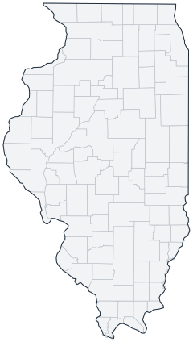

Historical county changes, 1790–1990 › Illinois

| Name↕ | Unit↕ | Existed↕ | FIPS↕ |
|---|---|---|---|
| Adams County | county | 1830–1990 | 17001 |
| Alexander County | county | 1820–1990 | 17003 |
| Bond County | county | 1820–1990 | 17005 |
| Boone County | county | 1840–1990 | 17007 |
| Brown County | county | 1840–1990 | 17009 |
| Bureau County | county | 1840–1990 | 17011 |
| Calhoun County | county | 1830–1990 | 17013 |
| Carroll County | county | 1840–1990 | 17015 |
| Cass County | county | 1840–1990 | 17017 |
| Champaign County | county | 1840–1990 | 17019 |
| Christian County | county | 1840–1990 | 17021 |
| Clark County | county | 1820–1990 | 17023 |
| Clay County | county | 1830–1990 | 17025 |
| Clinton County | county | 1830–1990 | 17027 |
| Coles County | county | 1840–1990 | 17029 |
| Cook County | county | 1840–1990 | 17031 |
| Crawford County | county | 1820–1990 | 17033 |
| Cumberland County | county | 1850–1990 | 17035 |
| De Witt County | county | 1840–1990 | 17039 |
| DeKalb County | county | 1840–1990 | 17037 |
| Douglas County | county | 1860–1990 | 17041 |
| DuPage County | county | 1840–1990 | 17043 |
| Edgar County | county | 1830–1990 | 17045 |
| Edwards County | county | 1820–1990 | 17047 |
| Effingham County | county | 1840–1990 | 17049 |
| Fayette County | county | 1830–1990 | 17051 |
| Ford County | county | 1860–1990 | 17053 |
| Franklin County | county | 1820–1990 | 17055 |
| Fulton County | county | 1830–1990 | 17057 |
| Gallatin County | county | 1820–1990 | 17059 |
| Greene County | county | 1830–1990 | 17061 |
| Grundy County | county | 1850–1990 | 17063 |
| Hamilton County | county | 1830–1990 | 17065 |
| Hancock County | county | 1830–1990 | 17067 |
| Hardin County | county | 1840–1990 | 17069 |
| Henderson County | county | 1850–1990 | 17071 |
| Henry County | county | 1830–1990 | 17073 |
| Iroquois County | county | 1840–1990 | 17075 |
| Jackson County | county | 1820–1990 | 17077 |
| Jasper County | county | 1840–1990 | 17079 |
| Jefferson County | county | 1820–1990 | 17081 |
| Jersey County | county | 1840–1990 | 17083 |
| Jo Daviess County | county | 1830–1990 | 17085 |
| Johnson County | county | 1820–1990 | 17087 |
| Kane County | county | 1840–1990 | 17089 |
| Kankakee County | county | 1860–1990 | 17091 |
| Kendall County | county | 1850–1990 | 17093 |
| Knox County | county | 1830–1990 | 17095 |
| La Salle County | county | 1840–1990 | 17099 |
| Lake County | county | 1840–1990 | 17097 |
| Lawrence County | county | 1830–1990 | 17101 |
| Lee County | county | 1840–1990 | 17103 |
| Livingston County | county | 1840–1990 | 17105 |
| Logan County | county | 1840–1990 | 17107 |
| Macon County | county | 1830–1990 | 17115 |
| Macoupin County | county | 1830–1990 | 17117 |
| Madison County | county | 1820–1990 | 17119 |
| Marion County | county | 1830–1990 | 17121 |
| Marshall County | county | 1840–1990 | 17123 |
| Mason County | county | 1850–1990 | 17125 |
| Massac County | county | 1850–1990 | 17127 |
| McDonough County | county | 1840–1990 | 17109 |
| McHenry County | county | 1840–1990 | 17111 |
| McLean County | county | 1840–1990 | 17113 |
| Menard County | county | 1840–1990 | 17129 |
| Mercer County | county | 1830–1990 | 17131 |
| Monroe County | county | 1820–1990 | 17133 |
| Montgomery County | county | 1830–1990 | 17135 |
| Morgan County | county | 1830–1990 | 17137 |
| Moultrie County | county | 1850–1990 | 17139 |
| Ogle County | county | 1840–1990 | 17141 |
| Peoria County | county | 1840–1990 | 17143 |
| Perry County | county | 1830–1990 | 17145 |
| Piatt County | county | 1850–1990 | 17147 |
| Pike County | county | 1830–1990 | 17149 |
| Pope County | county | 1820–1990 | 17151 |
| Pulaski County | county | 1850–1990 | 17153 |
| Putnam County | county | 1830–1990 | 17155 |
| Randolph County | county | 1800–1990 | 17157 |
| Richland County | county | 1850–1990 | 17159 |
| Rock Island County | county | 1840–1990 | 17161 |
| Saline County | county | 1850–1990 | 17165 |
| Sangamon County | county | 1830–1990 | 17167 |
| Schuyler County | county | 1830–1990 | 17169 |
| Scott County | county | 1840–1990 | 17171 |
| Shelby County | county | 1830–1990 | 17173 |
| St. Clair County | county | 1800–1990 | 17163 |
| Stark County | county | 1840–1990 | 17175 |
| Stephenson County | county | 1840–1990 | 17177 |
| Tazewell County | county | 1830–1990 | 17179 |
| Union County | county | 1820–1990 | 17181 |
| Vermilion County | county | 1830–1990 | 17183 |
| Wabash County | county | 1830–1990 | 17185 |
| Warren County | county | 1830–1990 | 17187 |
| Washington County | county | 1820–1990 | 17189 |
| Wayne County | county | 1820–1990 | 17191 |
| White County | county | 1820–1990 | 17193 |
| Whiteside County | county | 1840–1990 | 17195 |
| Will County | county | 1840–1990 | 17197 |
| Williamson County | county | 1840–1990 | 17199 |
| Winnebago County | county | 1840–1990 | 17201 |
| Woodford County | county | 1850–1990 | 17203 |
Note: Decimals in FIPS codes come from Forstall, who gives every county a code, including counties that no longer exist. A county abolished between 1930 and 1990 keeps the code it had. However, a county which was abolished prior to 1930 never received a code. Such a county is given the code of the county which precedes it alphabetically plus a decimal to hold its place in the list.
Source: Richard L. Forstall (1996), Population of States and Counties of the United States: 1790 to 1990, U.S. Bureau of the Census (public domain). Always check a row against the scan it links to.